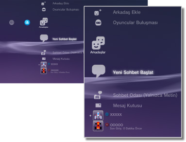

Arkadaşlar > Arkadaşlar kategorisi
Arkadaşlar kategorisi
Bu özelliği kullanmak için, sistem yazılımını güncellemeniz gerekebilir.
Mesajlar gönderin veya alın veya diğer PS3™ kullanıcılarıyla PSNSM üzerinden sohbet edin. Bu özellikleri kullanmak için bir Sony Entertainment Network hesabı oluşturmanız (kaydolmanız) gerekir. Aşağıdaki simgeler  (Arkadaşlar) altında görüntülenir. Görüntülenen simgeler kullanım koşullarına göre değişir.
(Arkadaşlar) altında görüntülenir. Görüntülenen simgeler kullanım koşullarına göre değişir.

 |
Engellenenler Listesi | Engelleme listenizde bir kişi listesi görüntüleyin. |
|---|---|---|
 |
Arkadaş Ekle | Arkadaşlar listenize bir kişiyi ekleme isteği gönderin. |
 |
Oyuncular Buluşması | PlayStation®3 formatındaki çevrimiçi oyunlar* oynadığınız kişilerin listesini görüntüleyin. Bu simgeyi oyuncuya bir mesaj göndermek veya bir Arkadaş ekleme isteği yapmak için seçin. |
 |
Yeni Sohbet Başlat | Bir sohbet başlatın. |
 |
Sohbet Odası (Yalnızca Metin) | Bu simge metin sohbeti için bir sohbet odası olduğunda görüntülenir. Yeni bir sohbet odası eklenirse,  görüntülenir. görüntülenir. |
 |
Sesli Sohbet/Görüntülü Sohbet | Simge sesli / görüntülü sohbet sırasında görüntülenir. |
 |
Mesaj Kutusu | Yeni mesajlar oluşturun ve aldığınız ve gönderdiğiniz mesajları görüntüleyin. |
 |
(çevrimiçi kimliğiniz) | Hesabınız için seçtiğiniz avatar burada görüntülenir. |
|
(Arkadaşın adı) | Bu simge Arkadaşlar listenizdeki bir kişiyi gösterir. Bu simgeyi seçerek mesajları gönderebilir veya alabilir ya da Arkadaşlarınızla sohbet edebilirsiniz. |
| * |
Bazı oyunlar bu özelliği desteklemeyebilir. |
|---|
İpuçları
- PS3™ sisteminde, Arkadaşlar listenizdeki kullanıcılar "Arkadaşlar" olarak adlandırılırlar. Ayrıca, (Arkadaşlar) altında gönderdiğiniz veya aldığınız e-postalar "mesajlar" olarak adlandırılırlar.
- En fazla 2.000 Arkadaş eklenebilir.
- En fazla 100 Arkadaş görüntülenir.
- 100'den fazla Arkadaşınız varsa, görüntülenen Arkadaşları güncellemek için oturumu kapatmanız ve yeniden oturum açmanız gerekir. Bu işlemi yaparken, PSNSM'de oturum açtığınız diğer tüm aygıtlarda da oturumu kapatın.
- Arkadaşlarınızı PS4™ sistemleri, PS Vita sistemleri ve PlayStation® Uygulamasının yüklü olduğu akıllı telefonlar veya diğer aygıtlardan da yönetebilirsiniz.
 (Oyuncular Buluşması) altında en fazla 50 oyuncu görüntülenebilir. Bu sınıra erişildikten sonra, her yeni oyuncu eklendiğinde en eski giriş otomatik olarak silinir.
(Oyuncular Buluşması) altında en fazla 50 oyuncu görüntülenebilir. Bu sınıra erişildikten sonra, her yeni oyuncu eklendiğinde en eski giriş otomatik olarak silinir.- Sesli sohbet yapmak için, bir ses giriş / çıkış cihazı (kulaklık gibi, ayrıca satılır) gerekir. Görüntülü sohbet için, bir USB kameraya (ayrıca satılır) da ihtiyacınız olacaktır.
- Uyumlu bir USB kulaklık / Bluetooth® kulaklık / USB Kamera (EyeToy™) / PlayStation®Eye / PS3™ sisteminde USB video sınıfı (UVC) ile uyumlu USB kamera kullanabilirsiniz.
- Bir USB hub kullanarak bir USB kamerayı bağlarken, USB 2.0 destekleyen bir hub kullanın. USB 2.0 desteklemeyen bir hub kullanıldığında, görüntü bozulması oluşabilir veya görüntü görüntülenmeyebilir.
- Desteklenen çevre aygıtları ve kullanım yönergeleri hakkında bilgi için, çevre aygıtlarının satıldığı bayiye başvurun.